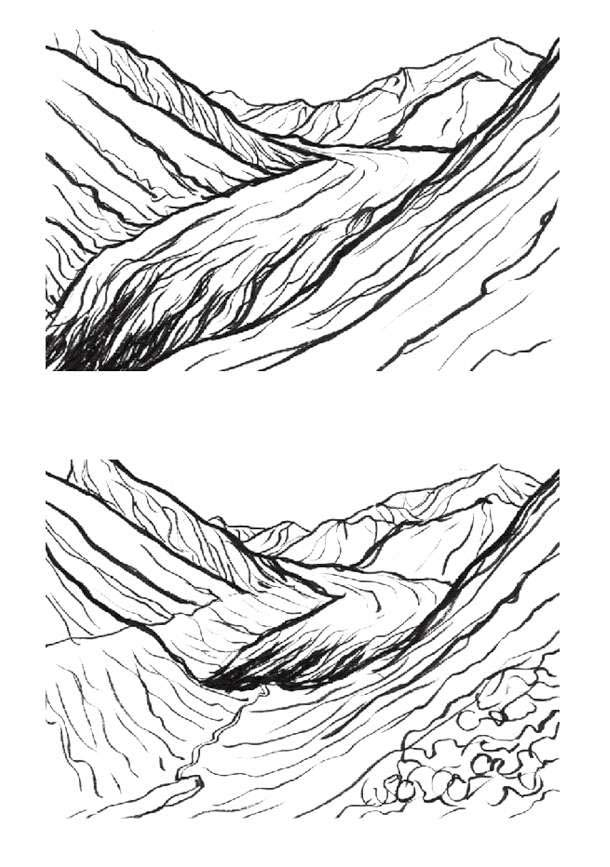

理论上讲，我们现在仍处于冰期。当然，最糟糕的冰河期大概在1.25万年以前出现，现在已经是冰期的末期。虽然冰期始于260万年前，但格陵兰岛和南极洲大范围冰盖的存在，说明当今地球依然处于冰期。
瑞士地理学家和工程师皮埃尔·马特尔（Pierre Martel，1706—1767）是提出冰期理论的第一人。他在去法国阿尔卑斯山夏慕尼山谷的一次旅行中，发现了散布山谷间的大型冰砾，这表明冰川一度非常巨大，但随时间流逝而收缩。这一现象也出现在瑞士及斯堪的纳维亚半岛的一些地方以及智利的安第斯山脉（后文将会提及）。但直至19世纪70年代，该理论才为大众广泛接受并认定其存在的真实性。

夏慕尼山谷冰川的收缩
除了被冰川搬运而散落四处的大型冰砾外，还有其他证据可以证明冰期的存在，例如岩石冲刷和摩擦、山谷切割、鼓丘的形成以及化石的不规则分布。
地球历史上至少有5个大冰期，除去这些时期，地球上并没有冰，哪怕在高纬度地区。第一个大冰期是休伦冰期，从24亿年前延伸到21亿年前（复杂单细胞生物形式出现前）；第二个大冰期是成冰纪大冰期，从8.5亿年前至6.35亿年前（多细胞生物开始进化）；第三个大冰期安第斯—撒哈拉冰期时间跨度较小，为4.6亿年前至4.3亿年前（更复杂的海洋生物开始进化）；第四个大冰期卡鲁大冰期是从3.6亿年前持续至2.6亿年前（盘古大陆形成时）；最后是目前的第四纪大冰期，始于258万年前（第一个人属进化前的几十万年前）并持续至今。
我们现在正在经历一个相对稳定的“间冰期”，这为人类种族繁荣提供了维系生存的气候条件和平台。假如没有这样的稳定性，我们可能无法存活。
至于下一个冰期何时到来，这完全取决于大气中的二氧化碳含量。二氧化碳含量的骤降势必加速下一冰期的来临，但最快也要在1.5万年以后。基于二氧化碳不断升高的事实（我们对化石燃料颇有偏爱，二氧化碳升高的可能性很大），预计当前的间冰期会再持续5万年甚至更长时间。